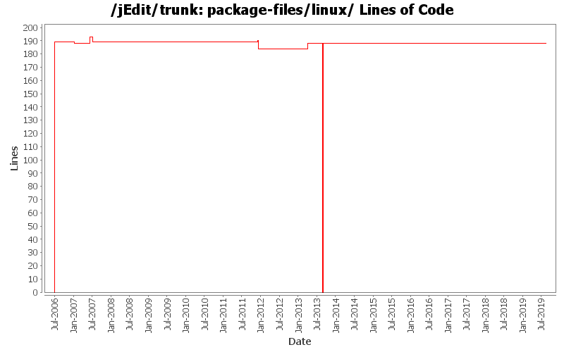

[root]/package-files/linux
 deb
(6 files, 99 lines)
deb
(6 files, 99 lines)
 rpm
(1 files, 74 lines)
rpm
(1 files, 74 lines)
 slackware
(4 files, 35 lines)
slackware
(4 files, 35 lines)

| Author | Changes | Lines of Code | Lines per Change |
|---|---|---|---|
| Totals | 28 (100.0%) | 435 (100.0%) | 15.5 |
| Vampire0 | 15 (53.6%) | 393 (90.3%) | 26.2 |
| ezust | 9 (32.1%) | 37 (8.5%) | 4.1 |
| blueyed | 1 (3.6%) | 3 (0.7%) | 3.0 |
| olearyni | 1 (3.6%) | 1 (0.2%) | 1.0 |
| jchoyt | 1 (3.6%) | 1 (0.2%) | 1.0 |
| k_satoda | 1 (3.6%) | 0 (0.0%) | 0.0 |
Add missing Java 11 changes
0 lines of code changed in 1 file:
hopefully finish switch from Java 1.7 to Java 1.8
0 lines of code changed in 1 file:
reinstantiate trunk and branches
188 lines of code changed in 2 files:
put tombstone in place, official repository for jEdit core is now in Git
0 lines of code changed in 2 files:
jEdit 5.2 depends on Java 1.7. No more Java 1.6 compatibility requirements.
We don't need these version.targets at the moment since we only target to one
version so I removed them. We can re-add them if we need to later.
1 lines of code changed in 1 file:
Reverse merge 22931 and 22934. jEdit 5.1 will require java6, jEdit 6.0 (or 5.2 whatever is the next version) will require Java7.
1 lines of code changed in 1 file:
jEdit 5.1 requires Java 1.7 now.
1 lines of code changed in 1 file:
Enable antialiasing for dockable text and menus by default from Windows.
5 lines of code changed in 1 file:
Removing un-helpful comments in startup script as per kazutoshi's suggestion in
merge request# 3449003
0 lines of code changed in 1 file:
Removing 192mb heap limit.
3 lines of code changed in 1 file:
Add some quotes and explicit variable markers to *nix launcher
5 lines of code changed in 1 file:
Remove sending to background from the Linux start script, otherwise it cannot be used properly as commit editor with the -wait option or to get the -usage output on the commandline properly
1 lines of code changed in 1 file:
Got rid of unneeded check for java 1.5 in chunk workaround code.
Doc updates.
2 lines of code changed in 1 file:
Removed a JVM option "-Xms64M" from all platforms. This is a follow up
of r14000, which removed it only for Windows installation, assuming the
same reasoning are also true on all modern JVMs.
See more details in the following thread on jedit-devel.
"Removing -Xms JVM option"
http://www.nabble.com/Removing--Xms-JVM-option-tt20353337.html
0 lines of code changed in 1 file:
jedit man page: Fix hyphen-used-as-minus-sign reported by lintian
3 lines of code changed in 1 file:
improved the startup scripts and added the higher max memory setting to the Mac OS X bundle
1 lines of code changed in 1 file:
Added an option to deactivate that rectangular selection mode is active if Ctrl is pressed, fixed the shell scripts and batch files
6 lines of code changed in 1 file:
[ 1649695 ] jedit shell script doesn't handle spaces in filenames
1 lines of code changed in 1 file:
fixed Debian (and slack?) startup script to NOT do CD when it starts up - jedit-Bugs-1630001
1 lines of code changed in 1 file:
a test of changed property
2 lines of code changed in 2 files:
Increased maximum heap
1 lines of code changed in 1 file:
upped the memory, added some nicer options...
3 lines of code changed in 1 file:
Updated the text in some of the .deb distribution files...
21 lines of code changed in 1 file:
- Great rewrite of build.xml with many additions like automated building of various distribution files
- moved build-support to core
- made the standard plugins use build-support
189 lines of code changed in 2 files: